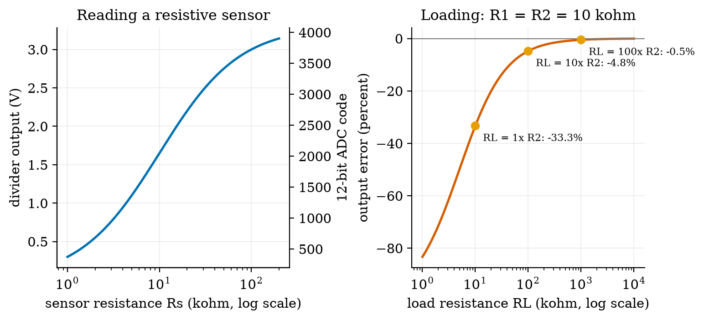
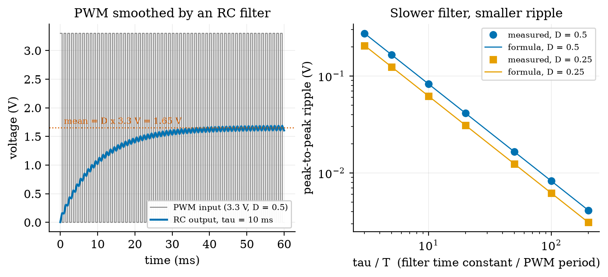
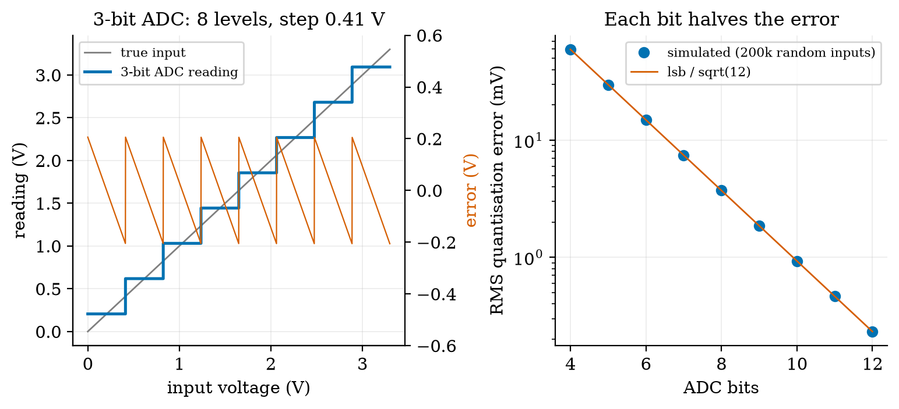
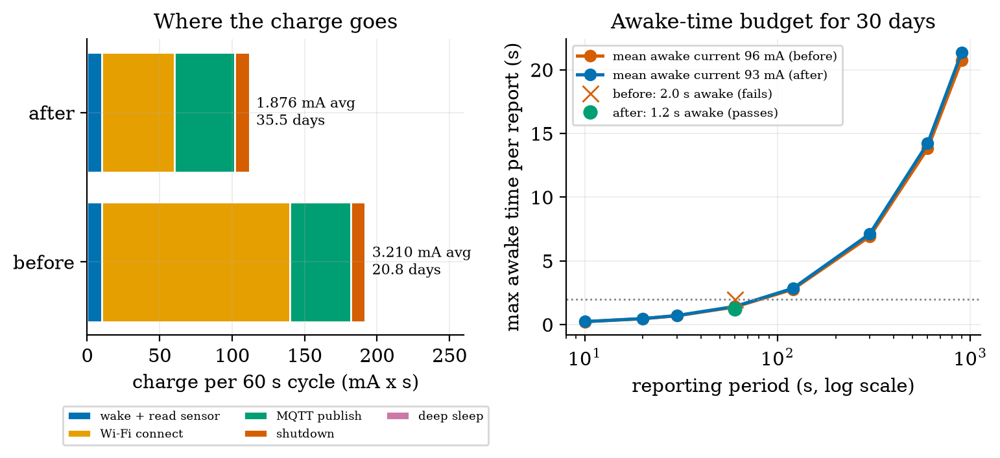

Unit 2 ready
Electronics for Embedded Systems: Volts, Amps, Bits and Batteries
Ohm's law, dividers, LEDs, PWM, ADCs, battery budgets and motor drivers, with numbers.
Session map
After this session you can:
- use Ohm’s law, power and the two Kirchhoff laws to size a resistor, a voltage divider and an LED current limiter, and say when a divider is spoiled by the load it feeds;
- explain PWM (pulse-width modulation) and an RC filter, and predict the average, the RMS value and the ripple of a smoothed PWM signal;
- explain what an ADC (analog-to-digital converter) does, derive its quantisation error q/\sqrt{12} and read a datasheet’s bit count in volts;
- build a duty-cycled power budget for a battery node, find the awake time that meets a battery-life target, and see which state dominates the charge;
- size a DC motor and its H-bridge driver for the rover from a speed, an acceleration and a supply voltage, and see why the driver’s voltage drop can decide the design.
- Prerequisites: Unit 1 (duty cycle, time constant, first-order response, the battery-life formula). Algebra, a little calculus (one integral). No electronics background: voltage, current and resistance are defined in Section 2.
- Difficulty ladder used: easy → medium → medium-hard → hard (Sections 3.1 to 3.4); the hardest tier is posed as open questions in Section 3.5.
- Deliverables: this document (.tex, .pdf, .docx), 6 figures, the module
codes/electronics/circuits_np/(series/parallel, divider with load, E12 values, LED load line, PWM and RC, ADC, power budget, DC motor and bridge; 8 tests), and the running-project power and drive budget of Section 7. - Source anchors: this Unit derives its formulas from stated laws and quotes no paper or datasheet. All component values (LED, motor, battery, microcontroller currents, bridge drops, rover mass) are assumed round numbers of the right order of magnitude, not measurements of a named part; check a datasheet before building. Every other number was produced by the scripts in
figures/(fig01tofig06,analysis_numbers.py) or the module’s tests.
1. Terms: the term tree
| Term | Symbol | One-line meaning | Where it appears | New / known |
|---|---|---|---|---|
| voltage | V | electrical “pressure”: energy per unit charge, in volts (V) | 2 | new |
| current | I | flow of charge, in amperes (A); 1 mA = 0.001 A | 2 | new |
| resistance | R | how strongly a part opposes current, in ohms (\Omega) | 2 | new |
| Ohm’s law | V=IR for a resistor | 2 | new | |
| Kirchhoff’s laws | currents into a junction sum to zero; voltages around a loop sum to zero | 3.2 | new | |
| power | P | rate of energy use, P=VI, in watts (W) | 2 | new |
| energy | E | E=Pt, in joules (J) or watt-hours (Wh) | 2 | new |
| voltage divider | two resistors in series that output a fraction of the input | 3.2 | new | |
| loading | a connected load changes the output of a divider | 3.3 | new | |
| pull-up / pull-down resistor | resistor that sets a pin’s default level when nothing drives it | 3.3 | new | |
| floating input | a pin connected to nothing, so it reads random values | 3.3 | new | |
| logic level | the voltage ranges that count as 0 and 1 (here 0 V and 3.3 V) | 3.3 | new | |
| LED forward voltage | V_f | the nearly constant voltage across a conducting LED | 3.3 | new |
| load line | the straight line of possible operating points set by the supply and resistor | 3.3 | new | |
| E12 series | the 12 standard resistor values per decade (10, 12, 15, … 82) | 3.2 | new | |
| capacitor | C | stores charge; in farads (F); voltage across it cannot jump | 3.3 | new |
| RC time constant | \tau=RC | time for an RC circuit to cover 63% of the way to its target | 3.3 | new |
| low-pass filter | passes slow changes and blocks fast ones | 3.3 | new | |
| PWM | switching an output on and off quickly; the duty cycle sets the average | 3.3 | new | |
| RMS value | the “effective” value that gives the same heating as a steady voltage | 3.3 | new | |
| MOSFET switch | a transistor used as an electronic on/off switch controlled by a voltage | 3.4 | new | |
| flyback diode | a diode that gives a motor or relay coil’s current a path when switched off | 3.4 | new | |
| back-EMF | k\omega | the voltage a spinning motor generates against its supply | 3.4 | new |
| stall current | current when the shaft is held still: V/R | 3.4 | new | |
| H-bridge | four switches that let a motor run both ways and be speed-controlled by PWM | 3.4 | new | |
| battery capacity | C | charge a battery stores, in mAh; energy is C times its voltage | 3.4 | new |
| ADC, resolution, LSB | n, q | converts a voltage to an integer code; n bits give 2^n codes; LSB is one step | 3.3 | new |
| quantisation error | the difference between the true voltage and the code’s voltage | 3.3 | new | |
| DAC | converts an integer code to a voltage (the reverse of an ADC) | 6 | new |
Terms used but not taught here: Nyquist and aliasing (Unit 3), microcontroller pins and interrupts (Unit 4), Wi-Fi (Unit 5), PID (Unit 9).
2. Remember
Voltage V (volts, V) is the electrical pressure that pushes charge; current I (amperes, A) is the flow of charge; resistance R (ohms, \Omega) is how much a part resists the flow. For an ideal resistor they are tied by Ohm’s law V=IR. \tag{1} Powers of ten: 1 mA =10^{-3} A, 1 \muA =10^{-6} A, 1 k\Omega=10^3\,\Omega, 1 M\Omega=10^6\,\Omega.
Power is the rate of energy use: P=VI. With Ohm’s law, P=I^2R=V^2/R. Energy is power times time, E=Pt (joules if t is in seconds; watt-hours if in hours). A battery’s capacity is usually quoted as charge in mAh; its energy is that charge times its voltage: 2000 mAh at 3.7 V is 2.0\ \text{Ah}\times3.7\ \text{V}=7.4 Wh.
Voltage is like water pressure, current like flow rate, resistance like a narrow pipe. A narrow pipe (large R) gives a small flow for the same pressure. Two pipes in series are harder to push water through (resistances add); two side by side are easier (conductances add). The analogy fails for fast signals and for diodes, but it carries this whole Unit.
Memory hooks.
- V = I R, “Very Important Rule”. Cover the one you want in the triangle V over I and R.
- Power turns into heat in a resistor, so a 100 \Omega resistor carrying 0.1 A dissipates 1 W and gets hot. Small resistors are rated 0.25 W.
- A divider is a ratio, not a voltage source. It is only right if little current is taken from it.
- An ADC with n bits slices the range into 2^n steps; each extra bit halves the step.
Before you read on: three predictions (answers in Section 10).
- Two 10 k\Omega resistors divide 3.3 V in half (1.65 V). You connect another 10 k\Omega across the bottom resistor. What is the output now: about 1.65 V, about 1.1 V, or about 0.8 V?
- A 10-bit ADC with a 3.3 V reference reads a voltage. About how large is one step: 3 V, 3 mV, or 3 \muV?
- The rover’s motors are rated 6 V and the battery pack is 7.4 V. The motor driver chip drops 2 V. Can the motors get their full rated 6 V?
Recall quiz (answers in Section 10).
- What current flows through a 330 \Omega resistor with 3.3 V across it, and how much power does it dissipate?
- Why does an input pin connected to nothing read random values?
- What does the duty cycle of a PWM signal decide?
- Why is the quantisation error of an ADC never larger than half a step?
- Which battery-node state uses most of the charge: the long sleep or the short awake time?
3. Understand: the derivation
3.1 Tier 1 (easy): intuition and a picture
A microcontroller (the small computer of Unit 4) can only do two electrical things well: read a voltage between 0 V and its supply (3.3 V here) and put out 0 V or 3.3 V. Everything else in this Unit is the art of fitting the real world to that. A soil sensor’s resistance changes with wetness, and the microcontroller reads voltages, not resistances. The standard trick is a voltage divider: put the sensor in series with a fixed resistor and read the voltage at the join. Figure 1 (left) shows the result for a 10 k\Omega fixed resistor and a sensor of 1 to 200 k\Omega: a smooth S-shaped curve from 0.30 V to 3.14 V, steepest where the two resistances are equal.

The right panel is the warning that comes with the trick: the divider’s output is only the nominal value if the next stage draws almost no current. We derive both curves in Section 3.2 and 3.3.
3.2 Tier 2 (medium): the definitions made precise
3.2.1 Series, parallel and Kirchhoff’s laws
Two laws, both statements of conservation, explain every circuit in this course. Kirchhoff’s current law (KCL): the currents flowing into a junction sum to zero (charge does not pile up). Kirchhoff’s voltage law (KVL): the voltage rises and drops around any closed loop sum to zero (energy is conserved).
For two resistors in series the same current I flows through both (KCL), and the voltages add around the loop (KVL), so V=IR_1+IR_2=I(R_1+R_2) and the combined resistance is R_{\text{series}}=R_1+R_2. \tag{2} For two resistors in parallel the same voltage V is across both (KVL) and the currents add (KCL): I=V/R_1+V/R_2=V(1/R_1+1/R_2), so R_{\parallel}=\frac{R_1R_2}{R_1+R_2}. \tag{3} Two equal resistors in parallel give half: 10\ \text{k}\Omega\parallel10\ \text{k}\Omega=5\ \text{k}\Omega. The module’s series and parallel functions are these formulas.
3.2.2 The voltage divider
Put R_1 (top) and R_2 (bottom) in series across V_{\text{in}}; the output is taken across R_2. By (2) the current is I=V_{\text{in}}/(R_1+R_2), and by Ohm’s law the voltage across R_2 is \begin{aligned} V_{\text{out}}&=I\,R_2 &&\text{(Ohm's law on }R_2)\\ &=\frac{V_{\text{in}}}{R_1+R_2}\,R_2 &&\text{(insert the series current)}\\ &=V_{\text{in}}\,\frac{R_2}{R_1+R_2}. &&\text{(rearrange)} \end{aligned} \tag{4} It is a ratio: the output is the fraction R_2/(R_1+R_2) of the input. For R_1=R_2=10\ \text{k}\Omega and 3.3 V, the output is 1.65 V. For the soil sensor as R_2: 2 k\Omega gives 3.3\times2/12=0.55 V, and 100 k\Omega gives 3.3\times100/110=3.00 V, as in Figure 1. The steepest point is where R_s=R_1: there \mathrm{d}V_{\text{out}}/\mathrm{d}R_s=V_{\text{in}}R_1/(R_1+R_s)^2=3.3/(4\times10\,\text{k}\Omega)=82.5 mV per k\Omega, which a 12-bit ADC sees as about 102 codes per k\Omega. So choose R_1 near the middle of the sensor’s range: the sensitivity is best there.
3.2.3 Real resistors come in standard values
You cannot buy every value. The E12 series has 12 values per decade: 1.0, 1.2, 1.5, 1.8, 2.2, 2.7, 3.3, 3.9, 4.7, 5.6, 6.8, 8.2, times a power of ten (tolerance about 10%). The module’s nearest_e12(r, "up"|"down"|"nearest") rounds a computed value to one of them. A design is therefore finished only after rounding and re-checking: a calculated 130 \Omega becomes 120 or 150 \Omega (Section 3.3.2).
3.3 Tier 3 (medium-hard): the main derivations
3.3.1 Loading: the divider with something attached
If the next stage (an ADC input, an op-amp, a wire to another board) has resistance R_L to ground, it sits in parallel with R_2. Replace R_2 by R_2\parallel R_L in (4): V_{\text{out}}=V_{\text{in}}\frac{R_2\parallel R_L}{R_1+R_2\parallel R_L}. \tag{5} For R_L=R_2=10\ \text{k}\Omega, R_2\parallel R_L=5\ \text{k}\Omega, so V_{\text{out}}=3.3\times5/15=1.10 V instead of 1.65 V, an error of -33.3\%. That answers prediction 1 of Section 2. For a load ten times larger, R_L=100\ \text{k}\Omega: R_2\parallel R_L=9.09\ \text{k}\Omega and the output is 1.571 V, -4.8\%; a hundred times larger, -0.5\% (Figure 1, right; the numbers are printed by fig01_divider.py). Rule of thumb: the load should be at least 10 times the divider’s own resistance, or 100 times for 0.5% accuracy. (The divider’s own “source resistance” seen from the output is R_1\parallel R_2=5\ \text{k}\Omega, which is the quantity that matters when comparing with R_L.)
A level shifter is a divider. A 5 V sensor output must not go straight into a pin that tolerates at most 3.3 V (about 3.6 V is the usual absolute limit; check the datasheet). Choose R_1 and R_2 so that 5\,R_2/(R_1+R_2)\le3.3 V. The ratio needed is R_2/R_1\le1.94. The pair 10 k\Omega and 20 k\Omega gives 3.33 V (slightly over 3.3 V but within the usual 3.6 V limit), 10 k\Omega and 22 k\Omega gives 3.44 V, and the standard-value pair 1.8 k\Omega and 3.3 k\Omega gives 3.235 V, safely under 3.3 V (found by searching all E12 pairs between 1 k\Omega and 100 k\Omega; script analysis_numbers.py). The same divider is only suitable when the signal is slow, because the pin’s input capacitance and the divider’s resistance form a filter (next subsections).
3.3.2 Pull-ups, floating inputs and logic levels
A logic level is the voltage range that counts as 0 or 1: here about 0 V is “0” and about 3.3 V is “1”. An input pin that is connected to nothing is a floating input: it has almost infinite resistance to everything, so stray charge and nearby signals set its voltage, and it reads random values. A button that connects a pin to ground when pressed leaves the pin floating when released. The fix is a pull-up resistor to 3.3 V: released, the pin is pulled to 3.3 V through the resistor (no current flows into the pin, so there is almost no voltage drop and the pin reads 1); pressed, the pin is shorted to 0 V (reads 0), and a current 3.3\ \text{V}/10\ \text{k}\Omega=0.33 mA flows through the resistor for as long as the button is held. A larger resistor (100 k\Omega: 0.033 mA) wastes less; it also charges the pin’s capacitance more slowly: with an assumed 10 pF of pin capacitance, \tau=RC is 0.1 \mus for 10 k\Omega and 1 \mus for 100 k\Omega, both far faster than a human button press. A pull-down is the mirror image (resistor to 0 V, button to 3.3 V). Most microcontrollers have built-in pull-ups that can be switched on in software (Unit 4).
3.3.3 The LED and its load line
A resistor obeys Ohm’s law: current is proportional to voltage. An LED does not: it passes almost nothing below its forward voltage V_f (about 2 V for a red LED, an assumed value here) and then current rises extremely fast. A standard model is the diode equation I=I_s\big(e^{V/(nV_T)}-1\big) with thermal voltage V_T=0.02585 V; we assume n=2 and choose I_s so that the LED drops 2.0 V at 10 mA (the function led_is_for). An LED has to be limited by a series resistor, because a voltage source across it would drive an unlimited current. With supply V_s and resistor R, KVL gives the load line V_s=IR+V_{\text{LED}}(I)\quad\Longleftrightarrow\quad I=\frac{V_s-V_{\text{LED}}}{R}, \tag{6} a straight line in the I-V plane. The circuit operates where the load line crosses the LED’s curve: the only point satisfying both. Because the LED curve is nearly vertical at V_f, the voltage across it is about V_f whatever the current, and the design formula follows: the resistor must drop the rest, R=\frac{V_s-V_f}{I_{\text{LED}}}=\frac{3.3-2.0}{0.010}=130\ \Omega. \tag{7} No E12 value is 130 \Omega: the neighbours are 120 and 150 \Omega. Solving (6) numerically (the function led_current) gives the true current: 150 \Omega gives 8.71 mA (about 13% under 10 mA, slightly dimmer), 100 \Omega gives 12.87 mA, 330 \Omega gives 4.08 mA. The resistor dissipates I^2R=13 mW at the design point, far below its 250 mW rating.

Note the limitation the right panel exposes: a resistor-limited LED is a poor constant-current source. A supply that moves by 1.2 V (a Li-ion cell from full to flat) moves the brightness by more than a factor of two. The remedy, a constant-current driver, is outside the scope of this course.
3.3.4 PWM: average and RMS
Pulse-width modulation (PWM) switches an output between 0 and V_H at a fixed frequency; the fraction of each period T spent high is the duty cycle D (Unit 1). Its average over one period is \bar v=\frac1T\int_0^T v\,\mathrm{d}t=\frac1T\,(V_H\cdot DT+0\cdot(1-D)T)=D\,V_H. \tag{8} Its RMS value (root mean square: the steady voltage that would heat a resistor equally) follows from the mean of v^2, which is V_H^2D because v^2 is V_H^2 for a fraction D of the time and 0 otherwise: v_{\text{rms}}=\sqrt{\frac1T\int_0^T v^2\,\mathrm{d}t}=V_H\sqrt{D}. \tag{9} At D=0.25 and 3.3 V the mean is 0.825 V but the RMS value is 3.3\times0.5=1.65 V, twice as large: a PWM signal heats a resistor like its RMS value, but a slow motor or an RC filter responds to its mean. The module’s pwm_stats returns both.
3.3.5 The RC filter and ripple
A capacitor C (farads) stores charge Q=CV, so the current into it is I=C\,\mathrm{d}V/\mathrm{d}t and its voltage cannot jump. Put a resistor R between a source V_{\text{in}} and a capacitor and read the capacitor voltage v: the resistor current is (V_{\text{in}}-v)/R, which must equal the capacitor current, so RC\,\frac{\mathrm{d}v}{\mathrm{d}t}=V_{\text{in}}-v\quad\Longleftrightarrow\quad\frac{\mathrm{d}v}{\mathrm{d}t}=-\frac{v-V_{\text{in}}}{\tau},\qquad\tau=RC. \tag{10} This is exactly the first-order equation of Unit 1 (Section 3.3.1 there) with target V_{\text{in}} and time constant \tau=RC, so its solution for a constant input is v(t)=V_{\text{in}}+(v(0)-V_{\text{in}})e^{-t/\tau}: 63% of the way after one \tau. It is a low-pass filter: it follows slow changes and averages away fast ones. Driven by PWM with \tau\gg T, the output settles near the mean DV_H with a small sawtooth ripple. To find its size: during the on-time DT the output rises by about (V_H-\bar v)\,DT/\tau (rate of rise at the mean value, times duration), and V_H-\bar v=V_H(1-D), so \Delta v_{pp}\approx V_H\,D(1-D)\,\frac{T}{\tau}. \tag{11} The ripple is largest at D=0.5 and falls in proportion to T/\tau. Figure 3 simulates the circuit exactly and compares: for D=0.5 and \tau/T=10, the measured ripple is 0.0825 V against the formula 0.0825 V; for \tau/T from 3 to 200 the measured and predicted values agree to better than 0.5% (for example 0.0165 V against 0.0165 V at 50, and 0.0041 V against 0.0041 V at 200; for D=0.25 at \tau/T=10, 0.0619 V against 0.0619 V). PWM through an RC filter is thus a cheap DAC (digital-to-analog converter, a part that turns a number into a voltage): the duty cycle is the number and the filter’s output is the voltage. The price is the trade of Section 3.5: more smoothing means a slower response (settling takes about 3\tau to 95%).

An honest note. The first version of the simulator compared floating-point times to decide whether a PWM step was high, and a rounding error made a few periods one step too long; the measured ripple was then up to 17% above the formula at large \tau/T (0.0096 V against 0.0082 V at 100). The formula was right and the test rig was wrong. The module now counts integer steps. A figure that disagrees with a derivation is a reason to look at both.
3.3.6 The ADC and its quantisation error
An ADC (analog-to-digital converter) turns a voltage between 0 and its reference voltage V_{\text{ref}} into an integer code from 0 to 2^n-1, where n is the resolution in bits. One code step, the LSB (least significant bit), is q=\frac{V_{\text{ref}}}{2^n}. \tag{12} For n=10 and V_{\text{ref}}=3.3 V, q=3.22 mV: prediction 2 of Section 2 is answered (a few millivolts). For n=12, q=0.806 mV. The converter reports which bin the input fell in; taking the bin’s middle as the reading, the quantisation error is between -q/2 and +q/2 (Figure 4, left, with a deliberately coarse 3-bit ADC: step 0.41 V, maximum error 0.206 V = q/2). If the input is busy, the error is uniformly distributed over that interval with density 1/q, so its variance is \sigma_q^2=\int_{-q/2}^{q/2}x^2\,\frac1q\,\mathrm{d}x=\frac1q\cdot\frac{2}{3}\left(\frac q2\right)^3=\frac{q^2}{12},\qquad\sigma_q=\frac{q}{\sqrt{12}}. \tag{13} Each extra bit halves q and so halves the RMS error. We checked this with 200,000 random inputs: at 8 bits the simulated RMS error is 3.729 mV against q/\sqrt{12}=3.721 mV; at 10 bits, 0.931 mV against 0.930 mV; at 12 bits, 0.2326 mV against 0.2326 mV (Figure 4, right). For a full-scale sine wave the ratio of signal power to quantisation-noise power, in decibels, is about 6.02\,n+1.76 dB; our simulation gave 49.85 dB (formula 49.92) at 8 bits, 62.11 dB (61.96) at 10 bits and 74.03 dB (74.00) at 12 bits.

This is the ideal converter. A real one adds its own noise, gain and offset errors, and a reference voltage that is only as good as the supply, so a 12-bit ADC is not a 12-bit measurement (Section 3.5).
3.4 Tier 4 (hard): generalisation, edge cases, what the textbooks gloss over
3.4.1 The battery node’s power budget, and the R4 requirement
Unit 1 assumed 120 mA for 2 s. A budget should list states: for each state its current and the time spent in it per cycle. Our assumed table for a Wi-Fi sensor node reporting every 60 s: wake and read the sensor (50 mA, 0.2 s), Wi-Fi connect (100 mA, 1.3 s), MQTT publish (140 mA, 0.3 s), shutdown (50 mA, 0.2 s), deep sleep (0.01 mA, the other 58 s). The charge per cycle is the sum of current times time over the states, 10+130+42+10+0.58=192.6 mA s, so the average current is 192.58/60=3.210 mA and the life of the 2000 mAh battery (80% usable) is \text{life}=\frac{C\,\eta}{24\,\bar I}=\frac{2000\times0.8}{24\times3.210}=20.8\ \text{days}. \tag{14} Requirement R4 of Unit 1 asks for at least 30 days. The design fails the requirement. Where does the charge go? Wi-Fi connect uses 67.5% of it, publish 21.8%, the two 0.2 s states 5.2% each, and the 58 seconds of deep sleep only 0.3% (Figure 5, left). The long sleep is not the problem; the 2 seconds awake are. A battery budget is a budget of awake charge.
How much awake time can we afford? For 30 days the average current must be at most 2000\times0.8/(24\times30)=2.222 mA. Writing the average as awake fraction times the mean awake current plus the rest asleep and solving for the awake time t at period P=60 s: \begin{aligned} \bar I&=\frac{I_{\text{act}}\,t+I_{\text{slp}}\,(P-t)}{P}\le I_{\max} &&\text{(average current, Unit 1)}\\ t&\le P\,\frac{I_{\max}-I_{\text{slp}}}{I_{\text{act}}-I_{\text{slp}}} &&\text{(solve for }t) \end{aligned} \tag{15} With the mean awake current 192/2.0=96 mA this gives t\le1.383 s: the current design (2.0 s awake) is too long by 0.6 s. The right panel of Figure 5 plots this limit against the reporting period: at 60 s it is 1.38 s; at 5 minutes, 6.9 s; at 15 minutes, 20.7 s. Design change: keep the radio’s channel and address in memory so that the connection step takes 0.5 s instead of 1.3 s (an assumed saving; the technique is Unit 4’s deep-sleep topic). The cycle becomes 0.2, 0.5, 0.3, 0.2 s awake = 1.2 s, charge per cycle 112.6 mA s, average current 1.877 mA, life 35.5 days: R4 is met with a margin of 18%.

3.4.2 Switching a load: the MOSFET, the flyback diode, the H-bridge
A microcontroller pin can supply only a few to some tens of mA, so a motor, a valve or a relay needs a transistor switch. A MOSFET is controlled by the voltage on its gate and draws no steady gate current; a logic-level type turns fully on with 3.3 V and then looks like a small resistor R_{DS(on)}. If it is 0.1 \Omega (an assumed value), carrying 0.5 A it dissipates I^2R=25 mW and stays cool. The older bipolar transistor is controlled by current: to saturate a 0.2 A load with a rule-of-thumb “forced gain” of 10 you must feed 20 mA into its base, more than most pins can give.
A motor or a relay coil is an inductor: its current cannot change instantly, because the voltage across it is L\,\mathrm{d}i/\mathrm{d}t. If a transistor interrupts a 0.5 A current in a 2 mH coil within 1 \mus, the voltage spike is L\,\Delta i/\Delta t=2\times10^{-3}\times0.5/10^{-6}=1000 V (an order of magnitude; real spikes are limited by stray capacitance), enough to destroy the transistor. A flyback diode across the coil gives the current a path to circulate and die away. Always put one across an inductive load switched by a transistor.
To make a motor turn both ways, an H-bridge uses four switches arranged as an H with the motor as the crossbar: closing the top-left and bottom-right pair drives current one way, the other pair drives it the other way, and PWM on the switches sets the average voltage (Section 3.3.4). Each current path goes through two conducting switches in series, so a bridge has a total voltage drop (about 0.4 V for a MOSFET bridge, about 2 V for an older bipolar one: assumed typical orders of magnitude). The motor sees at most V_{\text{supply}}-V_{\text{drop}} at full duty. That is the answer to prediction 3: on a 7.4 V pack with a 2 V bridge, the motors get at most 5.4 V, not their rated 6 V.
3.4.3 The DC motor model and sizing the rover’s drive
A permanent-magnet DC motor has a winding of resistance R. A spinning motor also acts as a generator: it produces a back-EMF proportional to speed, k_e\omega, opposing the supply. KVL around the electrical loop gives V=iR+k_e\,\omega. \tag{16} The torque on the shaft is proportional to current, \tau=k_t\,i. Energy conservation fixes k_t=k_e=k in SI units: the electrical power turned into mechanical power is (k_e\omega)\,i and the mechanical power is \tau\omega=k_t i\,\omega; equating them gives k_e=k_t. Eliminating i=\tau/k gives the speed-torque line \omega=\frac{V-(\tau/k)\,R}{k}. \tag{17} It is a straight line: highest speed at zero torque (\omega_0, the no-load speed), falling to zero at the stall torque, where i=V/R is the stall current. We build the model from catalogue-style numbers (assumed): rated 6 V, stall current 0.8 A, no-load current 0.15 A (paying for internal friction), no-load speed 200 rpm. Then R=6/0.8=7.5\ \Omega and, from V-i_0R=k\omega_0 at no load, k=(6-0.15\times7.5)/20.94=0.2328 V s/rad. Taking the friction current into account, the shaft torque is k(i-i_0).
The rover’s demand (assumed): mass 1.5 kg, wheel radius 33 mm, rolling resistance coefficient 0.05, two driven wheels. At constant speed the rolling force is 0.05\times1.5\times9.81=0.736 N, shared by two wheels: each motor delivers \tau_c=0.736\times0.033/2=12.1 mN m. To accelerate at 0.5 m/s^2 it also needs ma=0.75 N: each motor adds 0.75\times0.033/2=12.4 mN m, so \tau_a=24.5 mN m. A speed of 0.5 m/s needs a wheel speed of 0.5/0.033=15.15 rad/s = 144.7 rpm. Rearranging (17) with friction (the module’s volts_needed) gives the motor voltage required: V_{\text{needed}}=k\omega+\Big(\frac{\tau}{k}+i_0\Big)R. \tag{18} For cruising: 0.2328\times15.15+(0.01214/0.2328+0.15)\times7.5=3.53+1.51=5.04 V (motor current 0.202 A). While accelerating: 5.44 V (0.255 A). Both are below the rated 6 V, so the motor is big enough (Figure 6, left: the cruise and accelerating points lie on the 6 V line well above the 144 rpm needed). The decision is made by the driver:
| bridge | pack | max motor voltage | duty needed, cruise | duty needed, accelerating | verdict |
|---|---|---|---|---|---|
| bipolar (drop 2.0 V) | 7.4 V | 5.40 V | 0.934 | 1.008 | cannot accelerate |
| bipolar (drop 2.0 V) | 6.8 V | 4.80 V | 1.051 | 1.134 | cannot even cruise |
| MOSFET (drop 0.4 V) | 7.4 V | 7.00 V | 0.720 | 0.777 | works, headroom |
| MOSFET (drop 0.4 V) | 6.8 V | 6.40 V | 0.788 | 0.850 | works, headroom |
![Left: speed-torque lines of one motor at 6 V (blue) and 4 V (orange, ending at its lower stall torque) with the rover’s cruise (green dot, 12.1 mN m) and accelerating (red square, 24.5 mN m) operating points; the dotted line is the 144.7 rpm needed for 0.5 m/s. Right: the largest motor voltage at full duty against pack voltage for a 2.0 V and a 0.4 V bridge drop, with the 5.04 V (cruise) and 5.44 V (accelerating) requirements. At 7.4 V the bipolar bridge delivers 5.40 V, just short of the accelerating requirement.](../assets/fig/u2/fig06_motor.png)
Stall. A jammed motor draws V/R=0.8 A and dissipates I^2R=4.8 W in a winding meant for a fraction of that. The driver should be rated for the stall current of both motors (1.6 A) or limit current, and the software must detect a stall (Unit 9). Endurance. With the 0.72 duty of the MOSFET design, the battery supplies 0.72\times0.202=0.146 A per motor, 0.291 A for both. An edge computer drawing an assumed 0.5 A at 5 V through a 90% efficient regulator adds 5\times0.5/7.4/0.9=0.375 A, in total 0.667 A. A 2600 mAh pack (80% usable, 19.2 Wh nominal, 15.4 Wh usable) lasts 2600\times0.8/667=3.1 h; the motors alone would allow 7.1 h. The computer, not the wheels, is the larger load, which is typical for small robots.
3.5 Tier 5 (hardest): open questions
- What is a bit worth? An n-bit ADC resolves steps of q, but its accuracy is limited by reference voltage error, offset, gain, noise and non-linearity; the effective number of bits is usually less than n. How would you measure the effective number of bits of the ADC on your board, using only a stable voltage source and the code readings? (Hint: look at the spread of repeated readings of a constant input.)
- Is mAh the right unit? A 2000 mAh battery at 3.7 V and a 2000 mAh battery at 1.5 V store very different energies. When does comparing capacities in mAh mislead, and what do real batteries do at high current or low temperature that our constant \eta=0.8 hides?
- How cheap can a DAC be? PWM plus an RC filter is a DAC whose update speed is limited by \tau and whose ripple by T/\tau. For a 10-bit DAC at 3.3 V (step 3.2 mV), what \tau/T is needed to keep the ripple under half a step at D=0.5, and what does it do to the response time? (Use (11).)
4. Apply
4.1 Worked problems
Problem 1 (divider and level shift). A 5 V sensor output must be read by a 3.3 V pin using two E12 resistors. Choose them, state the output and whether the 12-bit ADC can still tell neighbouring sensor levels apart.
Solution. Take R_1=1.8\ \text{k}\Omega (top) and R_2=3.3\ \text{k}\Omega (bottom): V_{\text{out}}=5\times3.3/5.1=3.235 V, under 3.3 V. The divider’s output resistance is 1.8\parallel3.3=1.16\ \text{k}\Omega, small against an ADC input that draws almost no current, so loading is negligible. A 12-bit step is 0.806 mV on the pin, which is 1.2 mV at the sensor output (the ratio is 5.1/3.3), so levels 2 mV apart are distinguished.
Problem 2 (LED resistor). A red LED (about 2.0 V) should carry about 10 mA from a 5 V supply. Find the resistor, round to E12, and the resulting current.
Solution. R=(5-2.0)/0.010=300\ \Omega; E12 neighbours 270 and 330 \Omega. With 330 \Omega the current is about (5-2.0)/330=9.1 mA (using the constant V_f approximation of (7)), power in the resistor 0.0091^2\times330=27 mW.
Problem 3 (ADC code). A 12-bit ADC with 3.3 V reference reads 1.65 V. What is the code, and what is the voltage uncertainty?
Solution. q=3.3/4096=0.806 mV. Code =\lfloor1.65/0.000806\rfloor=2048 (as printed in Figure 1’s script for the 10 k\Omega sensor). The reading is the middle of the bin, so the true voltage is within \pm q/2=\pm0.40 mV, with RMS error q/\sqrt{12}=0.23 mV.
Problem 4 (battery life). Using the table of Section 3.4.1 with Wi-Fi connect shortened to 0.5 s, compute the average current and battery life.
Solution. Charge =0.2\times50+0.5\times100+0.3\times140+0.2\times50+58.8\times0.01=10+50+42+10+0.588=112.59 mA s per 60 s: \bar I=1.8765 mA. Life =2000\times0.8/(24\times1.8765)=35.5 days.
Problem 5 (motor voltage). At 0.5 m/s the rover needs 15.15 rad/s at 12.1 mN m per motor. What is the motor voltage and the stall current?
Solution. V=0.2328\times15.15+(0.01214/0.2328+0.15)\times7.5=3.527+1.516=5.04 V; stall current 6/7.5=0.8 A at the rated 6 V.
4.2 Code and figures
import circuits_np as C
print(C.divider(3.3, 10e3, 10e3)) # 1.65 V
print(C.divider(3.3, 10e3, 10e3, r_load=10e3)) # 1.10 V: loading
print(C.nearest_e12(130.0, "up")) # 150.0 ohm
avg, period, share = C.power_budget([("awake", 96.0, 2.0), ("sleep", 0.01, 58.0)])
print(C.battery_life_days(2000, avg)) # about 20.8 days
print(C.max_awake_seconds(60, 96.0, 0.01, 2000, 30)) # 1.383 s
m = C.DCMotor(6.0, 0.8, 0.15, 200.0)
print(m.volts_needed(15.15, 0.01214)) # 5.04 VThe full module and its README are in codes/electronics/circuits_np/. Its eight tests check series/parallel, the divider and its loading limit, E12 rounding, the LED load line (the operating point of 130 \Omega is 10.00 mA), PWM mean and RMS with the RC ripple formula, the ADC code range and the q/\sqrt{12} error to 2%, the power budget and the awake-time solution (which reproduces 30 days exactly), and the motor’s stall and no-load consistency.
What would look different if the theory were wrong? If (13) were wrong, the simulated RMS error would not fall by half per bit; it does, to better than 0.5% at every resolution. If (11) were wrong, the measured ripple would not scale as D(1-D)T/\tau; it does (the first, buggy version of the simulator showed a disagreement, and the bug was in the simulator).
5. Analyze
Limits. As R_L\to\infty the divider error \to0; as R_L\to0 the output \to0 (a shorted output). As \tau/T\to\infty the PWM ripple \to0 but the response time grows without limit. As the ADC resolution grows, q\to0 but the ideal-converter error is then swamped by real noise.
Dominance. In the node’s budget, charge is dominated by the awake states (99.7% of it before the change, 99.5% after), within them by the Wi-Fi connect (67.5% before, 44.4% after). Sleep current matters only once the awake charge has been cut hard: in the “after” budget it is 0.5% of the charge, up from 0.3%.
Order-of-magnitude estimate. A Wi-Fi node awake for t seconds out of P at about 100 mA averages 100\,t/P mA; for a 30-day life on 2000 mAh (budget 2.2 mA) the awake fraction must be about 2.2/100=2.2\% of the time, i.e. 1.3 s in a minute. The exact answer was 1.383 s.
Sensitivity. Life is inversely proportional to the average current, so every 10% cut in awake charge buys 10% more days. Cutting the connect time from 1.3 to 0.5 s (a 62% cut of that state) cut the total charge per cycle by 42% and raised the life by 71%.
Failure modes. (1) Floating input: random readings; add a pull-up or pull-down. (2) 5 V into a 3.3 V pin: damage; use a divider or level shifter. (3) No flyback diode: a switching spike can destroy the transistor. (4) Driver drop ignored: the rover cannot reach its speed (the table of Section 3.4.3). (5) Motor stall: 0.8 A and 4.8 W in a winding; a jam can burn the motor. (6) A loaded divider: a -33\% error looks like a sensor fault. (7) A battery that droops: LED brightness and ADC readings that depend on the supply drift together.
Items used from the pedagogy checklist: limits, dominance, estimate, sensitivity, failure modes, uncertainty (the \pm q/2 bound), invariants (energy conservation giving k_t=k_e), and constructed-versus-measured (all component values are assumed).
6. Evaluate
Resistor-limited LED versus a constant-current driver. The resistor costs a cent and works well for a regulated 3.3 V supply, but Figure 2 shows that a drooping battery moves the current by more than a factor of two. Use a regulated supply or a constant-current driver when brightness must be stable.
PWM-plus-RC versus a real DAC. The PWM DAC needs only a timer and two parts, but pays in settling time (about 3\tau to 95%) and ripple (V_HD(1-D)T/\tau). A real DAC chip responds in microseconds with no ripple but costs more and needs a bus (Unit 4). For a slowly changing set value (a heater, an LED dimmer, a motor speed) the PWM is often the right choice.
Linear regulator versus switching regulator. Stepping 7.4 V down to 3.3 V with a linear regulator burns the difference as heat: at the same current it is 3.3/7.4=44.6\% efficient. A switching (buck) regulator is typically well above 80% (a typical figure, not computed here). For a battery node that sleeps most of the time, the regulator’s own quiet current matters as much as its efficiency, which is why many nodes run directly from a battery or use a regulator with a quiescent current of microamperes.
Bipolar versus MOSFET bridge. The table of Section 3.4.3 is the argument: with the same motor and battery the 0.4 V-drop bridge works and the 2 V-drop one does not. The cost difference is small compared with a redesign.
Context. Ohm’s law is an empirical statement about many materials, not a law of nature: it fails for the LED (Section 3.3.3), for lamps whose resistance rises with temperature and for batteries at high current. The ideal ADC of Section 3.3.6 is a model; the first thing a datasheet adds is the effective number of bits. When NOT to use these formulas: at high frequency (parasitic capacitance and inductance dominate), at high power (heat and safety dominate) and on mains voltage (do not build mains circuits from this Unit).
Honesty about this Unit’s numbers. The formulas (divider, load line, ripple, quantisation error, motor line) were checked by simulation against themselves, which tests the algebra and the code but not any real part. The LED, microcontroller, motor, bridge, pack and rover values are assumed.
7. Create
- Soil-moisture front end. Choose the divider resistor for a sensor that ranges from 3 to 60 k\Omega so that the 12-bit ADC code changes by the most between dry and wet; compute the resolution in counts per k\Omega at both ends with
dividerandadc_code. - A 10-bit PWM DAC. Using (11) and the
rc_pwmsimulator, choose R, C and the PWM frequency so that the ripple is under half a step (1.6 mV) at 3.3 V, and report the 95% settling time. - Another power budget. Add an I2C temperature sensor state (1 mA, 50 ms) to the node and recompute life with
power_budget. - Combine with Unit 1. Replace the assumed currents of Unit 1’s
fig03_budget.pyby the state table of this Unit, and redraw battery life against reporting period. - Could become a package module:
iotrobotics.electronicswith the functions ofcircuits_np, reused for the rover’s sensors (Unit 3) and drive (Unit 9).
Running project, Layer 1: power and drive budget. Revised requirements after this Unit (numbers from the budgets above; every component value is assumed and must be replaced by datasheet values before building):
| id | requirement | status after Unit 2 |
|---|---|---|
| R4 | soil node lasts at least 30 days on 2000 mAh | fails with 2.0 s awake (20.8 days); passes with 1.2 s awake (35.5 days); the connect time must be cut by \ge0.62 s (maximum awake time 1.383 s) |
| R8 (new) | motor drive reaches 0.5 m/s while accelerating at 0.5 m/s^2 on a 6.8 to 7.4 V pack | needs a bridge with a drop of 0.4 V or less (duty 0.85 at 6.8 V); a 2 V drop fails |
| R9 (new) | driver and wiring survive a jammed wheel | rated for 0.8 A per motor (1.6 A total) or current-limited |
| R10 (new) | rover endurance on one pack | 3.1 h for the 2600 mAh pack with a 0.5 A edge computer; the computer is 56% of the load |
8. Visualization lesson
| Chart type | Best for | How it misleads | matplotlib call |
|---|---|---|---|
| load-line (operating-point) plot | where two curves meet: a device’s I-V curve and a circuit’s constraint | the dot is exact only if both curves are; with an assumed model it shows the idea, not the part | ax.plot(v, i), ax.plot(v, (vs-v)/r, "--"), ax.plot(v0, i0, "o") |
| staircase (transfer function) with error sawtooth | the input-output map of a quantiser; error against input | the sawtooth looks like a signal; label the twin axis in the unit of the error | ax.step(x, y, where="mid"), ax.twinx() |
| semilog / log-log with a theory line | a measured quantity against a formula over decades | on a log axis a 17% error is nearly invisible; print the numbers too | ax.semilogy(...), ax.loglog(...) |
| threshold / limit lines | showing a requirement against a curve | lines drawn without a label or unit read as data | ax.axhline(y, ls=":") |
| design-space curve (maximum allowed awake time against period) | the region where a requirement is met | readers read the curve as a prediction; it is a boundary | ax.semilogx(period, tmax) |
| stacked horizontal bar (charge by state) | a total made of parts, two designs compared | only the first segment shares a baseline; annotate shares | ax.barh(y, w, left=cum) |
Reading Figure 2 as a chart. The shared voltage axis lets one see that all four operating points have almost the same LED voltage (1.95 to 2.01 V) but very different currents: a vertical line in a load-line plot is the physics of a diode.
9. Problem set
- (easy) A 3.3 V supply drives a 330 \Omega resistor. Find the current and the power in the resistor.
- (medium) Design a divider that turns a 12 V battery into at most 3.3 V for an ADC pin using two E12 resistors; give the output, the divider’s source resistance and the load resistance the ADC input must exceed for 1% accuracy.
- (medium-hard) Show that the RMS value of a 0/V_H PWM signal is V_H\sqrt D and compute the heating power in a 100 \Omega resistor at 3.3 V and D=0.25, then the power of a 0.825 V DC voltage across it. Why do they differ?
- (hard) A node draws 80 mA for 1.5 s and 0.02 mA asleep per 10-minute cycle. Find the battery life from 1000 mAh (usable fraction 0.8), and the longest awake time that gives 90 days.
- (hardest) Using (17) with the rover’s motor, find the largest slope (incline, as a percentage grade) the rover can climb at 0.3 m/s with the MOSFET bridge on a 6.8 V pack. State your assumptions and what limits it first: voltage, current rating or traction.
10. Retrieval practice and recap
Answers to the Section 2 predictions.
- About 1.1 V (3.3\times5/15=1.10 V; error -33\%).
- About 3 mV (3.22 mV).
- No: at most 7.4-2=5.4 V.
Answers to the Section 2 recall quiz.
- 3.3/330=10 mA; P=VI=33 mW.
- It is connected to nothing, so its voltage is set by stray charge and neighbouring signals; a pull-up or pull-down fixes the default.
- The average voltage (DV_H), and so the average power or motor speed.
- The reading is the middle of the bin the input fell in, so the true value is within half a step.
- The short awake time: the awake states hold 99.7% of the charge in our budget; deep sleep only 0.3%.
Explain it to a friend.
- Why does connecting a sensor to a divider change the divider’s voltage?
- Why does a motor driver with a big voltage drop make a robot slow, even if the motor is strong?
- Why is a long deep sleep not enough to make a battery last?
Re-derive by hand tomorrow, without looking: (a) the divider formula from series resistance and Ohm’s law; (b) the quantisation error q/\sqrt{12}; (c) the maximum awake time for a given battery life.
11. Where next
- Unit 3 takes the voltage the ADC delivers and asks how good a measurement it is: sensor specifications, calibration, noise, sampling rate, aliasing and filters, and the motor’s encoder.
- Terms named here but not taught: Nyquist and aliasing (Unit 3), microcontroller GPIO and deep sleep (Unit 4), Wi-Fi and MQTT (Unit 5), stall detection and PID (Unit 9). They are registered in CURRICULUM.md.
- Open threads: all component values are assumed, not measured (replace with datasheet values); the effective number of bits of a real ADC is not measured; the 0.5 s Wi-Fi connect time is an assumption that Unit 4 must justify.